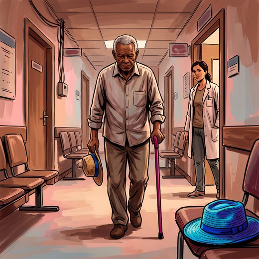

Consulta rápida à beira do leito
Condutas, doses e interações.
Referências da aula · 7
- Podsiadlo D, Richardson S. The timed 'Up & Go': a test of basic functional mobility for frail elderly persons. J Am Geriatr Soc. 1991;39(2):142-8. PMID 1991946.PubMed
- Guralnik JM, Simonsick EM, Ferrucci L, Glynn RJ, Berkman LF, Blazer DG, et al. A short physical performance battery assessing lower extremity function: association with self-reported disability and prediction of mortality and nursing home admission. J Gerontol. 1994;49(2):M85-94. PMID 8126356.PubMed
- Studenski S, Perera S, Patel K, Rosano C, Faulkner K, Inzitari M, et al. Gait speed and survival in older adults. JAMA. 2011;305(1):50-8. PMID 21205966. doi:10.1001/jama.2010.1923.PubMedDOI
- Cruz-Jentoft AJ, Bahat G, Bauer J, Boirie Y, Bruyère O, Cederholm T, et al. Sarcopenia: revised European consensus on definition and diagnosis. Age Ageing. 2019;48(1):16-31. PMID 30312372. doi:10.1093/ageing/afy169.PubMedDOI
- Montero-Odasso M, van der Velde N, Martin FC, Petrovic M, Tan MP, Ryg J, et al. World guidelines for falls prevention and management for older adults: a global initiative. Age Ageing. 2022;51(9):afac205. PMID 36178003. doi:10.1093/ageing/afac205.PubMedDOI
- Browne W, Nair BR. The Timed Up and Go test. Med J Aust. 2019;210(1):13-4. PMID 30636313.PubMed
- Freitas EV, Py L, organizadores. Tratado de Geriatria e Gerontologia. 5ª ed. Rio de Janeiro: Guanabara Koogan; 2022.
Documentos oficiais
Leis e publicações do Ministério da Saúde sobre o cuidado da pessoa idosa, de acesso livre.
Abrir os documentos